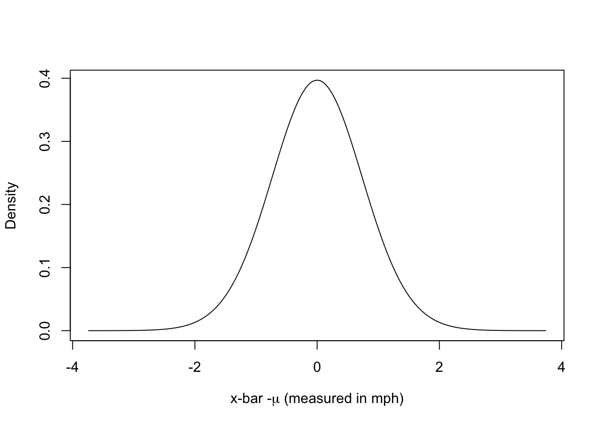

plot(cars)
The slides are here.
Our second class meeting will focus on Chapter 3; and Chapter 4 of Handbook of Regression Modeling in People Analytics for next time.
I will work with R’s internal dataset on cars: cars. There are two variables in the dataset, this is what they look like.
plot(cars)
I will work with the speed variable. The hypothesis to advance is that 17 or greater is the true average speed. The alternative must then be that the average speed is less than 17. Knowing only the sample size, I can figure out what \(t\) must be to reject 17 or greater and conclude that the true average must be less with 90% probability. The sample mean would have to be at least qt(0.1, 49) standard errors below 17 to rule out a mean of 17 or greater. Now let’s see what we have. Let me skim the data for the relevant information.
library(skimr)
skim(cars)| Name | cars |
| Number of rows | 50 |
| Number of columns | 2 |
| _______________________ | |
| Column type frequency: | |
| numeric | 2 |
| ________________________ | |
| Group variables | None |
Variable type: numeric
| skim_variable | n_missing | complete_rate | mean | sd | p0 | p25 | p50 | p75 | p100 | hist |
|---|---|---|---|---|---|---|---|---|---|---|
| speed | 0 | 1 | 15.40 | 5.29 | 4 | 12 | 15 | 19 | 25 | ▂▅▇▇▃ |
| dist | 0 | 1 | 42.98 | 25.77 | 2 | 26 | 36 | 56 | 120 | ▅▇▅▂▁ |
Doing the math by hand, I get:
\[ t = \frac{\overline{x} - \mu}{\frac{s}{\sqrt{n}}} = \frac{15.4 - 17}{\frac{5.29}{\sqrt{50}}} = -2.14 \]
Interpreting the result, the sample mean is 2.14 standard errors below the hypothetical mean of 17. The probability of a sample mean of 15.4 [or smaller] given a true average of 17, this standard deviation and sample size is pt(-2.14, 49) = 0.0186798. Notice that probability is less than 0.1; thus with at least 90% confidence, the true mean is not 17 or greater and thus must be smaller. Assuming the hypothetical mean [17 or greater] is true, the likelihood of generating a sample mean of 15.4 is only 0.0187 and this is far less than the 10% permissible outside of 90% confidence. Indeed, any sample mean more than 1.299 standard errors below 17 would be too small to sustain the belief that the true mean is 17 or greater because qt(0.1, 49) is -1.299. Put in the original metric, any sample mean below 16.0285747 would require a rejection of the claim that the true mean is 17 or greater with 90% confidence.
The confidence interval is always centered on the sample mean. Rearranging the equation above and solving for \(\mu\) given the \(t\) above, we get
\[ \mu = \overline{x} - t(\frac{s}{\sqrt{n}}) = 15.4 - (-1.299*\frac{5.29}{\sqrt{50}}) = 16.37143 \]
With 90% confidence, given this sample mean, the true value should be less than 16.37143.
t.testt.test(cars$speed, conf.level = 0.9, alternative = "less", mu=17)
One Sample t-test
data: cars$speed
t = -2.1397, df = 49, p-value = 0.01869
alternative hypothesis: true mean is less than 17
90 percent confidence interval:
-Inf 16.37143
sample estimates:
mean of x
15.4 \[ t(\frac{s}{\sqrt{n}}) = \overline{x} - \mu \] can lead to either:
\[ \overline{x} - t(\frac{s}{\sqrt{n}}) = \mu \]
or
\[ \overline{x} = \mu + t(\frac{s}{\sqrt{n}}) \]
So a minus \(t\) will be below \(\mu\) but above \(\overline{x}\) and a positive \(t\) will be above \(\mu\) but below \(\overline{x}\).
1. An hypothesis test given \(\mu\) with an alternative that is less must then render an upper bound given \(\overline{x}\).
2. An hypothesis test given \(\mu\) with an alternative that is greater must then render a lower bound given \(\overline{x}\).
Given a sample size \(n\), some unknown constant \(\mu\) and satisfaction of Lindeberg’s condition, the sampling distribution of the sample mean follows a \(t\) distribution with degrees of freedom \(n-1\). To render a graphical representation, let’s arbitrarily set n to 50, as in the above example. Here is a plot.
plot(seq(-5,5, by=0.01), dt(seq(-5,5, by=0.01), df=49), xlab=expression(paste("x-bar -",mu," (measured in std. errors of the mean)", sep="")), ylab="Density", type="l")
scale transformationWe can now reverse the scale by the standard error of the mean. In the above example, it is 0.7478. Measured in miles per hour, we obtain:
plot(seq(-5,5, by=0.01)*0.7478, dt(seq(-5,5, by=0.01), df=49), xlab=expression(paste("x-bar -",mu," (measured in mph)", sep="")), ylab="Density", type="l")
Now we will take the concrete example above.
We claim that the true mean is 17 or greater. Now we need center the distribution above as though the claim is true.
plot(x=17+seq(-5,5, by=0.01)*0.7478, dt(seq(-5,5, by=0.01), df=49), xlab=expression(paste(mu," (measured in mph)", sep="")), ylab="Density", type="l")
abline(v=17, col="red")
polygon(x = c(17+seq(0,5, by=0.01)*0.7478, 21), y = c(0, dt(seq(0,5, by=0.01), df=49)), col = "red")
The sample mean is estimated to be 15.4. How likely is that?
plot(x=17+seq(-5,5, by=0.01)*0.7478, dt(seq(-5,5, by=0.01), df=49), xlab=expression(paste("x-bar -",mu," (measured in mph)", sep="")), ylab="Density", type="l")
abline(v=17, col="red")
abline(v=15.4, col="blue")
polygon(x = c(17+seq(0,5, by=0.01)*0.7478, 21), y = c(0, dt(seq(0,5, by=0.01), df=49)), col = "red")
polygon(x = c(12, 17+seq(-5,-2.14, by=0.01)*0.7478), y = c(dt(seq(-5,-2.14, by=0.01), df=49), 0), col = "blue")
abline(h=0, col="black")
abline(v=17 + qt(0.1, df=49)*0.7874, col="black", lty=3)
The probability of seeing such a small sample mean if the true average is 17 is only 0.01869. The probability above the dotted black line is 0.9 with 0.1 below. WIth 90% confidence, anything below this would be sufficient evidence to reject the claim that the true average is 17 or above.
Let’s take the sample mean as the center and work out a confidence interval at 90%. It’s exactly the 16.37143 gives above.
plot(x=15.4+seq(-5,5, by=0.01)*0.7478, dt(seq(-5,5, by=0.01), df=49), xlab=expression(paste(mu," | x-bar (measured in mph)", sep="")), ylab="Density", type="l")
abline(v=15.4, col="blue")
abline(v=15.4 - qt(0.1, df=49)*0.7478, col="black", lty=3)
polygon(x = c(11, 15.4+seq(-5,1.3, by=0.01)*0.7478), y = c(dt(seq(-5,1.3, by=0.01), df=49), 0), col = "blue")
As an aside, 17 has exactly 0.01869 probability above it shown in orange.
plot(x=15.4+seq(-5,5, by=0.01)*0.7478, dt(seq(-5,5, by=0.01), df=49), xlab=expression(paste(mu," | x-bar (measured in mph)", sep="")), ylab="Density", type="l")
abline(v=15.4, col="blue")
abline(v=15.4 - qt(0.1, df=49)*0.7478, col="black", lty=3)
polygon(x = c(11, 15.4+seq(-5,1.3, by=0.01)*0.7478), y = c(dt(seq(-5,1.3, by=0.01), df=49), 0), col = "blue")
polygon(x = c(15.4+seq(2.14,5, by=0.01)*0.7478, 17), y = c(dt(seq(2.14,5, by=0.01), df=49), 0), col = "orange")
A linear regression example. The data can be loaded from the web.
# if needed, download ugtests data
url <- "http://peopleanalytics-regression-book.org/data/ugtests.csv"
ugtests <- read.csv(url)
str(ugtests)'data.frame': 975 obs. of 4 variables:
$ Yr1 : int 27 70 27 26 46 86 40 60 49 80 ...
$ Yr2 : int 50 104 36 75 77 122 100 92 98 127 ...
$ Yr3 : int 52 126 148 115 75 119 125 78 119 67 ...
$ Final: int 93 207 175 125 114 159 153 84 147 80 ...There are 975 individuals graduating in the past three years from the biology department of a large academic institution. We have data on four examinations:
library(skimr); library(kableExtra)
skim(ugtests) %>% dplyr::filter(skim_type=="numeric") %>% kable()| skim_type | skim_variable | n_missing | complete_rate | numeric.mean | numeric.sd | numeric.p0 | numeric.p25 | numeric.p50 | numeric.p75 | numeric.p100 | numeric.hist |
|---|---|---|---|---|---|---|---|---|---|---|---|
| numeric | Yr1 | 0 | 1 | 52.14564 | 14.92408 | 3 | 42 | 53 | 62 | 99 | ▁▃▇▅▁ |
| numeric | Yr2 | 0 | 1 | 92.39897 | 30.03847 | 6 | 73 | 94 | 112 | 188 | ▁▅▇▃▁ |
| numeric | Yr3 | 0 | 1 | 105.12103 | 33.50705 | 8 | 81 | 105 | 130 | 198 | ▁▅▇▅▁ |
| numeric | Final | 0 | 1 | 148.96205 | 44.33966 | 8 | 118 | 147 | 175 | 295 | ▁▅▇▃▁ |
library(GGally)Loading required package: ggplot2Registered S3 method overwritten by 'GGally':
method from
+.gg ggplot2# display a pairplot of all four columns of data
GGally::ggpairs(ugtests)